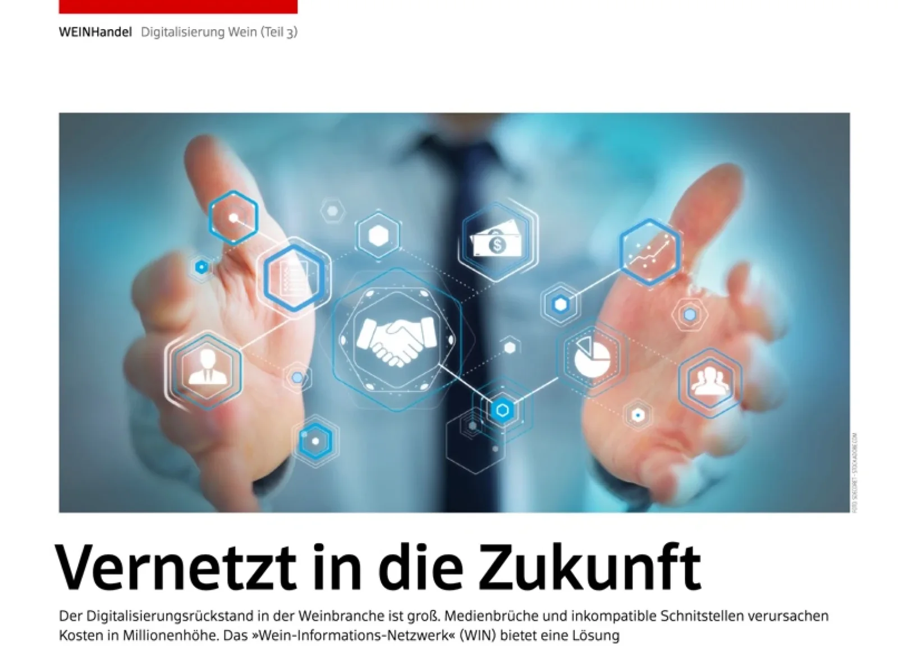
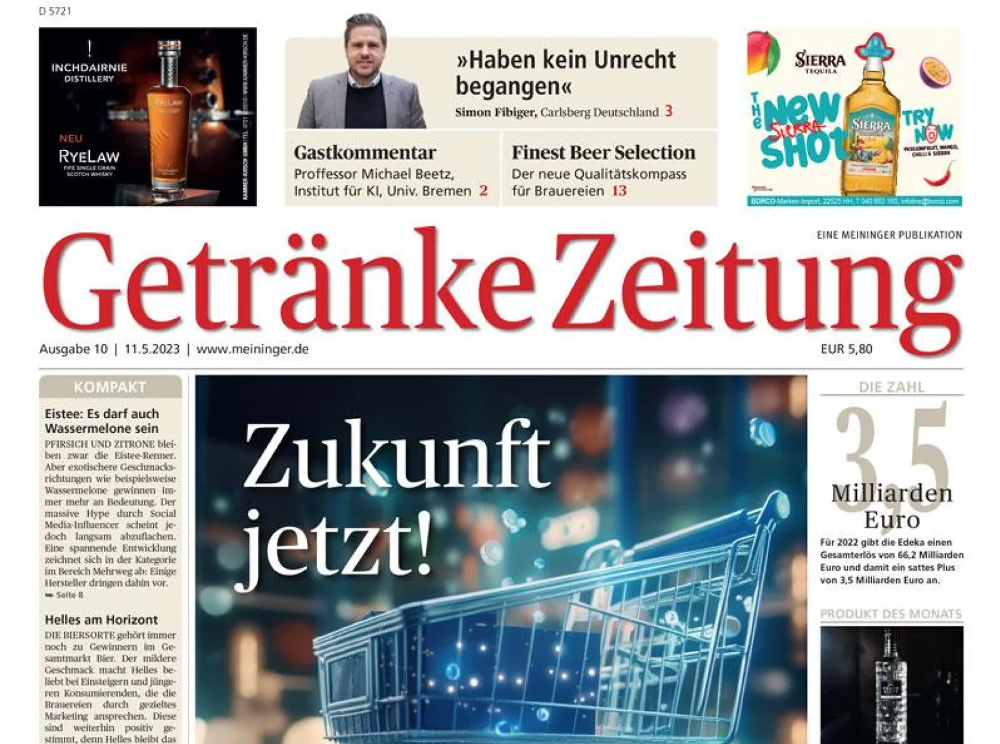
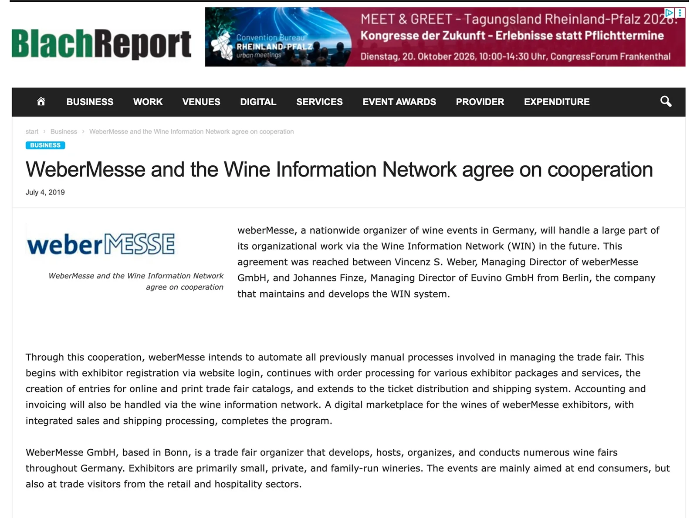

What the Trade Writes About WIN.
Articles, partnerships and launches since 2017. Scroll through the coverage and open any piece to read the original.

WeinWirtschaft · 2017Networked into the future
Getränke Zeitung · Sep 2024EuvinoPRO streamlines the beverage industry
BlachReport · Jul 2019weberMesse and WIN agree to work together